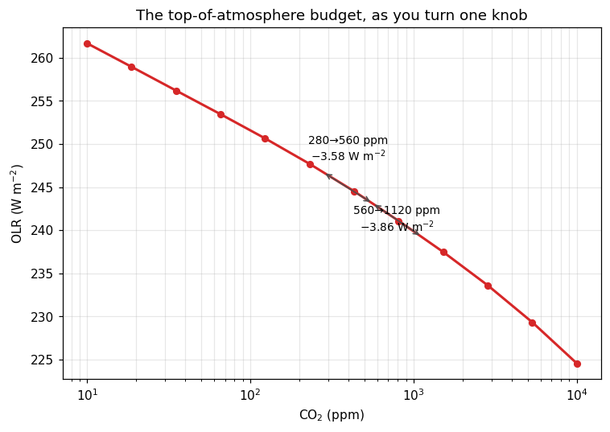

The CO₂ knob
Chapter 4 builds the zero-dimensional model into something that can answer a policy question. It defines radiative forcing — the change in the top-of-atmosphere energy budget when you change something, holding temperature fixed — pairs it with the Planck response λ ≈ −3.3 W m⁻² K⁻¹, and divides one by the other to get a climate sensitivity.
For the numerator it quotes a number: about 3.7 W m⁻² for a doubling of CO₂. It has to quote it. You cannot get that number from the zero-dimensional model, because the zero-dimensional model has no CO₂ in it — it has an ε, and nothing in it tells you what ε does when the concentration changes.
You have had a spectrally resolved radiation code for four pages now. So don’t quote it. Measure it.
The sweep
The column is the one pages 1 to 3 used: a 288 K surface, 80% relative humidity, a 6.5 K km⁻¹ troposphere under an isothermal stratosphere. The only thing that changes from call to call is the CO₂ mole fraction.
Twelve points, logarithmically spaced across three decades — from the table’s 10 ppm floor to 10 000 ppm, which is roughly the Eocene.
Twelve, and not two hundred, for a reason worth stating out loud: each call costs about 70 ms in the browser, so this sweep takes under a second and a 200-point version would take fifteen. Everything on this page is a single call to lw repeated; the only quantity you are ever spending is calls.

This is the figure the cell above produces. Live cells need WebAssembly; if your browser blocks it, the static version is here.
A straight line, on a log axis
The x axis is logarithmic and the curve is a straight line down it. That is the whole of the famous result: each doubling of CO₂ costs the planet about the same few watts per square metre, whether you are going from 280 to 560 or from 2240 to 4480.
The measured value here is 3.58 W m⁻² for the first doubling and 3.86 for the second, against the canonical 3.7 W m⁻². You just derived one of the most consequential numbers in climate science from an absorption table, on a laptop or a phone, in under a second — and if you carry it into chapter 4’s arithmetic, ΔT = F/|λ| = 3.58/3.3 = 1.09 K, you land on the notes’ no-feedback sensitivity of about 1.2 K without having been told either number.
Take the “straight line” claim seriously enough to check how straight, though, because it is a good habit and because the answer is interesting.
Over the range anybody actually argues about — 100 to 2000 ppm — the fit is a straight line to within a quarter of a watt, at 3.64 W m⁻² per doubling. Over the full three decades it drifts: the forcing per doubling climbs from 3.33 W m⁻² at 140→280 to 4.59 at 2240→4480. “Logarithmic” is an excellent approximation over the range it is usually quoted for, and it is an approximation. Hold that thought; the reason is the subject of the rest of this page.
Which part of the spectrum pays for it?
The OLR is a sum over fourteen bands, and the sweep above collapsed it to one number. Take the collapse back apart: how much of the 7.4 W m⁻² between 280 and 1120 ppm comes out of each band?
The band named after the gas contributes 5%. Four fifths of the forcing comes out of the two bands on either side of it, 500–630 and 700–800 cm⁻¹, which is where CO₂ absorbs weakly.
This is the saturation argument, and it is worth stating carefully, because the loose version of it — “the core is saturated, so adding CO₂ there does nothing” — is right about the conclusion and wrong about the mechanism, in a way the next section exposes.
A thousandfold absorber buying a fixed step
Page 2 left you with a contradiction. In a dry column the 15 µm core’s column optical depth is very nearly proportional to concentration:
τ ∝ ppm^0.999. Ten times the CO₂, ten times the optical depth, all the way from 30 ppm to 10 000. And yet the forcing over that same span is a near-constant few watts per doubling. A quantity that grows a thousandfold is driving one that grows by a fixed step each time you double. Those two sentences have to be reconciled, and reconciling them is the physical content of this page.
The resolution is page 3’s. The OLR does not care how opaque the column is. It cares about the temperature at which the column becomes opaque — where τ* = 1 sits, and what the thermometer reads there. Optical depth is the wrong variable to be watching. Height is.
Page 3 also warned that the band-mean τ* = 1 level is biased, so rather than argue from where the emission level is, watch the one quantity that has no such bias: brightness temperature, inverted straight from each band’s escaping flux.
There it is, in two rows.
The wing at 700–800 cm⁻¹ cools by 4.8 K per doubling, and by 4.8 K again, and again — 4.31, 4.72, 4.85, 4.83, 4.88 across five doublings from 140 ppm to 4480. A fixed temperature step for every factor of two in concentration. At a lapse rate of 6.5 K km⁻¹ that is the emission level climbing about 750 m every time you double, which is precisely what “τ ∝ concentration” implies: multiply the absorber by two and the level where τ* = 1 rises by one absorber scale height, no matter where it started. Constant step per doubling is the logarithm. The forcing is logarithmic because height is logarithmic in pressure, and for no other reason.
The core at 630–700 cm⁻¹ does the opposite — 2.65, 1.56, 0.82, 0.37, 0.13 K. Each doubling buys less than half of the last, and the band is converging on 197.8 K. This is saturation, seen properly. The core’s emission level is not stuck: it climbs by the same fixed step as everyone else, faithfully, every time. It is that it climbed out of the troposphere long ago — already at 280 ppm the band reads 200.7 K, and this sounding’s stratosphere is isothermal at 200 K everywhere above 146 hPa. A level rising through air that is all the same temperature changes the emitted flux by nothing. The core has not run out of absorber; it has run out of lapse rate.
That is the mechanism the loose version misses, and it matters, because it tells you what would change the answer. Give this column a stratosphere that warms with height — which Earth’s real ozone-heated one does — and the core’s contribution does not merely shrink, it changes sign. lapse_rate_sounding takes a gamma_strat for exactly this; rebuild the sounding with gamma_strat=2.5e-3 (2.5 K km⁻¹, warming upward) and re-run the decomposition:
The 630–700 band goes from +0.37 to −1.11 W m⁻²: more CO₂ now increases the outgoing flux there. Nothing about the optical depth changed. The absorber is identical; only the temperature it sits in is different.
Notice that the wings fall too, from +5.94 to +3.10, and the total from +7.44 to +2.94. A warming stratosphere is not a small correction to this picture — it is most of it. That is one reason the real 15 µm forcing calculation is a stratospheric-adjustment problem and not a troposphere one.
It also explains the curvature you measured two sections ago. As CO₂ rises, the wings’ emission levels climb toward the tropopause too, and one by one they run out of lapse rate the way the core already has. Meanwhile the absorption spreads outward into bands that were transparent before. At fourteen bands you see this only coarsely — a real spectrum has the band edges marching outward through the line wings, which is where the textbook “logarithmic because the band widens as the square root of concentration” argument lives. The drift from 3.33 to 4.59 W m⁻² per doubling is that competition, resolved as well as fourteen bands can resolve it.
Every cell on this page is the same three lines in a loop, and each line is there to prevent a specific bug.
apply_sounding(state, T, q, T_surf=T_SURF) # 1. reset
state["mole_fraction_of_carbon_dioxide_in_air"].values[:] = c # 2. set the knob
_, diagnostics = lw(state) # 3. callOne state, mutated in place. get_default_state was called once, outside the loop. States are ordinary dictionaries of array containers and .values[:] = ... writes through to the array the component will read. Building a fresh state per iteration would work and would cost more than the radiative transfer does — at 40 levels, state construction is comparable to the call itself.
Reset what you are not sweeping. apply_sounding re-writes the temperature and humidity every iteration even though neither is being swept. That looks redundant and is not. lw(state) returns diagnostics, and it is natural to state.update(diagnostics) — at which point the state carries the previous iteration’s fluxes and heating rates. Worse, in a longer script something else may have adjusted the temperature. A sweep should differ from its neighbour in exactly one quantity, and the cheapest way to guarantee that is to re-prescribe everything else. Sweeps that drift are near-impossible to spot in the output, because the curve still looks smooth.
Collect inside the loop. diagnostics is a fresh dictionary each call, but the arrays inside it are the component’s own working buffers: the next call overwrites them. This is why per_band_olr returns the result of spectral_olr(...) — a newly allocated array — rather than stashing the diagnostics dict for later. Keeping a list of diagnostics dicts across a sweep and reading them afterwards gives you the last iteration’s numbers, twelve times over, with no error anywhere. If you need the whole array, copy it: diag["upwelling_longwave_flux_in_air"].values.copy().
Radiative forcing is a definition about what you hold fixed. Physically, this page’s olr_at(560) − olr_at(280) is the forcing precisely because the temperature profile is identical in both calls. Forcing is the instantaneous budget imbalance before anything adjusts. If you let the profile respond you are no longer measuring forcing — you are measuring a response, and dividing it by λ gets you nothing. The reset in step 1 is not just hygiene here; it is the definition of the quantity.
Exercises
Physics
Finish chapter 4’s calculation. You have
F = 3.58 W m⁻². With the Planck feedbackλ = −3.3 W m⁻² K⁻¹, the no-feedback sensitivity isΔT = F/|λ|. Compute it and compare with the ~1.2 K in the notes. Then ask what the observed ~3 K per doubling implies about everything not in this calculation, and note that this page held the water vapour fixed — which page 6 does not.Repeat the sweep with a dry atmosphere. Pass
humidity=drytoolr_atand redo the two doublings. The forcing goes up, to about 4.95 and 5.21 W m⁻². Why should removing an entirely different gas make CO₂ more effective? (Look at which bands paid, and at what else absorbs at 500–630 and 700–800 cm⁻¹.) This is band overlap, and it is the reason forcings are not additive.Where does the core’s 5% come from at all? If the core’s emission level is in an isothermal stratosphere, its ΔOLR ought to be exactly zero, and it is +0.37 W m⁻² instead. The answer is that “the band’s emission level” is a fiction: 630–700 cm⁻¹ is eight
g-points whose absorption strengths span orders of magnitude, and the weakest of them are still emitting from the troposphere. Test it — rebuild the sounding withT_strat=220.0and re-run the decomposition. The core’s contribution falls to 0.11 W m⁻² while the wings only drop by a fifth. Why does raising the stratosphere’s temperature shrink the core’s forcing without abolishing it?
Code
Three curves instead of one. Rewrite the sweep to record, at each concentration, the total OLR, the window’s contribution (800–1180 cm⁻¹) and the core’s (630–700), and plot all three against log CO₂. Across the full 10 → 10 000 ppm span the total falls by 37 W m⁻², the window by 7 and the core by 5.6 — so the two regions everyone names account for a third of the change between them. Then look at where along the axis each one moves. On the twelve-point
co2grid this page already defines, the core does almost all of its falling over the first five points — 11.74 → 7.14 W m⁻², from 10 to 123 ppm — and almost none over the last four: 6.21, 6.17, 6.16, 6.16, from 1520 to 10 000 ppm. That curve is what saturation looks like drawn out, and the total’s is not parallel to it anywhere.Find the saturation concentration per band. For each band, sweep CO₂ and find where its brightness temperature stops changing by more than 0.1 K per doubling. Plot that concentration against band centre. The core saturates around present-day levels; ask what the plot would look like on a planet with ten times Earth’s CO₂ and what that means for Venus.
Make the sweep honest about its cost. Time the twelve-point sweep with
time.perf_counter()and print milliseconds per call. Then build a state inside the loop instead of reusing one, and time it again. Decide from the two numbers whether the craft callout’s advice was worth following at 40 levels, and whether your answer changes at 200.
Going deeper
The absorption data behind every number on this page came from a correlated-k table — eight g-points per band, standing in for millions of spectral lines. The correlated-k method explains how the table is built and what it assumes, including the assumption that fails exactly where this page has been working: that the same g-point is the same absorption strength at every height in the column.